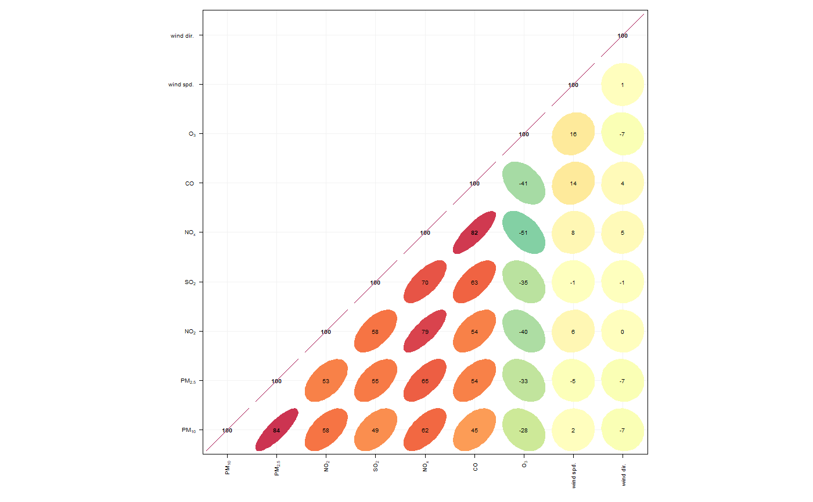
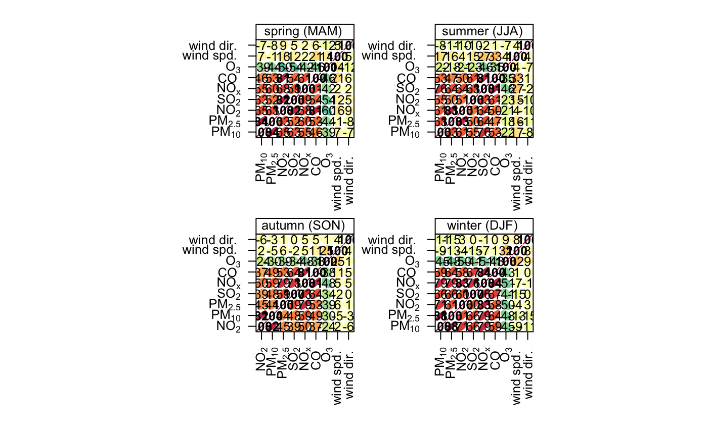
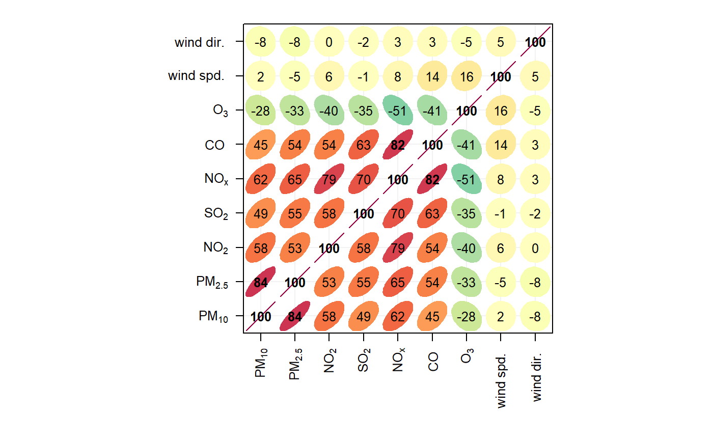
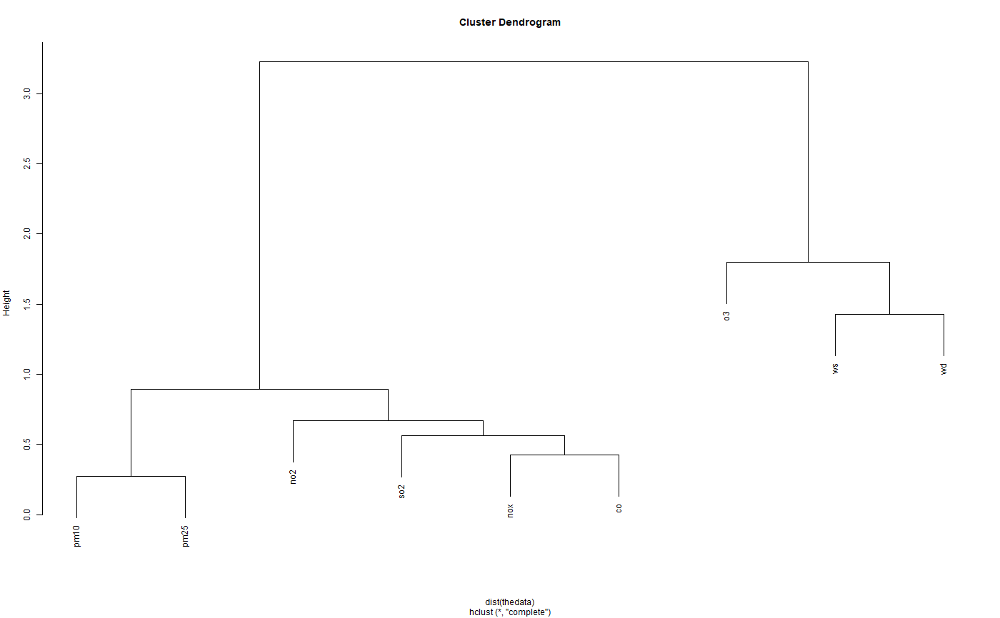

Function to to draw and visualise correlation matrices using lattice. The primary purpose is as a tool for exploratory data analysis. Hierarchical clustering is used to group similar variables.
corPlot( mydata, pollutants = NULL, type = "default", cluster = TRUE, method = "pearson", dendrogram = FALSE, lower = FALSE, cols = "default", r.thresh = 0.8, text.col = c("black", "black"), auto.text = TRUE, ... )
| mydata | A data frame which should consist of some numeric columns. |
|---|---|
| pollutants | the names of data-series in |
| type |
It is also possible to choose |
| cluster | Should the data be ordered according to cluster analysis. If
|
| method | The correlation method to use. Can be “pearson”, “spearman” or “kendall”. |
| dendrogram | Should a dendrogram be plotted? When |
| lower | Should only the lower triangle be plotted? |
| cols | Colours to be used for plotting. Options include
“default”, “increment”, “heat”, “spectral”,
“hue”, “greyscale” and user defined (see |
| r.thresh | Values of greater than |
| text.col | The colour of the text used to show the correlation values. The first value controls the colour of negative correlations and the second positive. |
| auto.text | Either |
| ... | Other graphical parameters passed onto |
As well as generating the plot itself, corPlot also returns
an object of class “openair”. The object includes three main
components: call, the command used to generate the plot;
data, the data frame of summarised information used to make the
plot; and plot, the plot itself. If retained, e.g. using
output <- corPlot(mydata), this output can be used to recover the
data, reproduce or rework the original plot or undertake further analysis.
Note the denogram when cluster = TRUE can aslo be returned and
plotted. See examples.
An openair output can be manipulated using a number of generic operations,
including print, plot and summary.
The corPlot function plots correlation matrices. The implementation
relies heavily on that shown in Sarkar (2007), with a few extensions.
Correlation matrices are a very effective way of understating relationships
between many variables. The corPlot shows the correlation coded in
three ways: by shape (ellipses), colour and the numeric value. The ellipses
can be thought of as visual representations of scatter plot. With a perfect
positive correlation a line at 45 degrees positive slope is drawn. For zero
correlation the shape becomes a circle. See examples below.
With many different variables it can be difficult to see relationships
between variables i.e. which variables tend to behave most like one another.
For this reason hierarchical clustering is applied to the correlation
matrices to group variables that are most similar to one another (if
cluster = TRUE).
If clustering is chosen it is also possible to add a dendrogram using the
option dendrogram = TRUE. Note that dendrogramscan only be plotted
for type = "default" i.e. when there is only a single panel. The
dendrogram can also be recovered from the plot object itself and plotted
more clearly; see examples below.
It is also possible to use the openair type option to condition the
data in many flexible ways, although this may become difficult to visualise
with too many panels.
Sarkar, D. (2007). Lattice Multivariate Data Visualization with R. New York: Springer.
Friendly, M. (2002). Corrgrams : Exploratory displays for correlation matrices. American Statistician, 2002(4), 1-16. doi:10.1198/000313002533
taylor.diagram from the plotrix package from which
some of the annotation code was used.
David Carslaw --- but mostly based on code contained in Sarkar (2007)
# load openair data if not loaded already data(mydata) ## basic corrgram plot corPlot(mydata)  ## plot by season ... and so on corPlot(mydata, type = "season")  ## recover dendogram when cluster = TRUE and plot it res <-corPlot(mydata)  plot(res$clust)  if (FALSE) { ## a more interesting are hydrocarbon measurements hc <- importAURN(site = "my1", year = 2005, hc = TRUE) ## now it is possible to see the hydrocarbons that behave most ## similarly to one another corPlot(hc) }